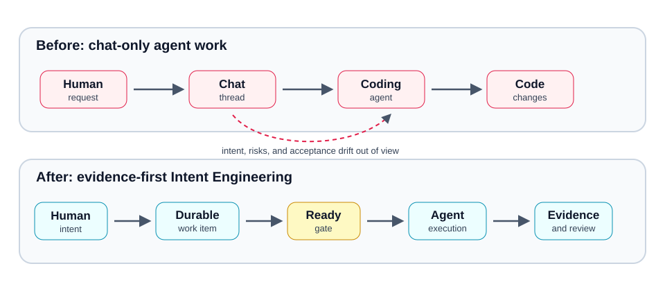
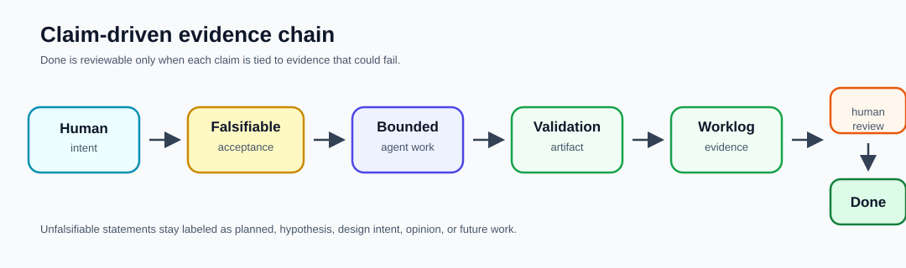
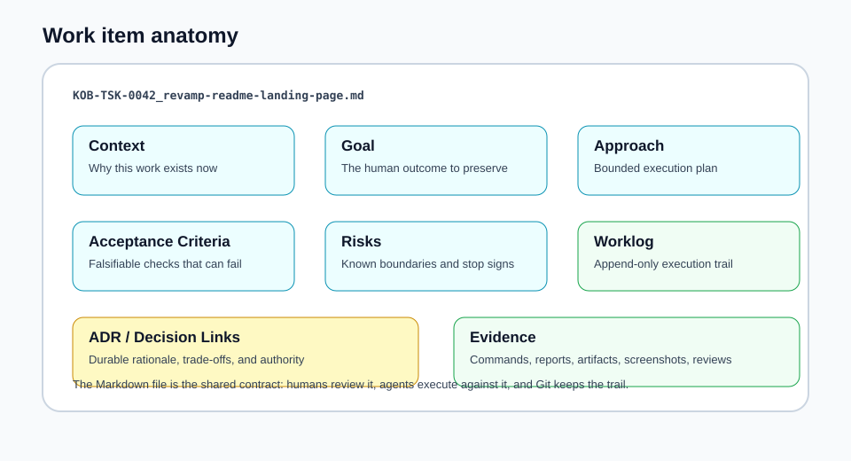
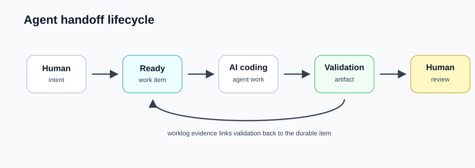
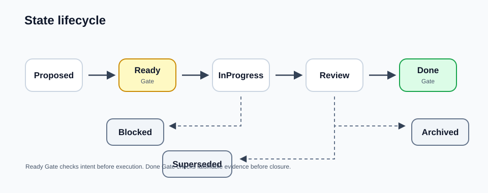
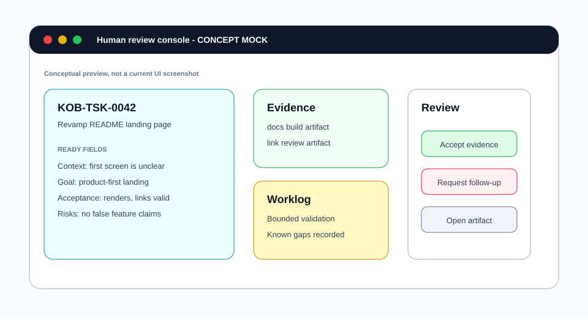

kano-agent-backlog-skill


Evidence-first, repo-native Intent Engineering for AI coding agents.
Turn messy human requests into durable Markdown work items with Ready gates, worklogs, ADRs, and validation evidence so humans and agents can review the same source of truth.
Stop losing intent between chat requests, coding agents, CI logs, review comments, and the next handoff.

Why this exists
AI coding agents can produce convincing reports. That does not make the work true.
KOB treats agent work as a falsifiable contract:
human intent -> acceptance criteria -> bounded agent work -> validation artifact -> worklog evidence -> human review -> DoneThe problem is not that agent teams lack task lists. The problem is that human intent, acceptance criteria, risks, and validation evidence often evaporate between conversations, tools, logs, and the next agent session. KOB keeps that trail in the repository as reviewable Markdown.
What this is
kano-agent-backlog-skill is a repo-native intent and evidence layer for AI
coding agents.
It provides:
- durable Markdown work items with stable IDs and frontmatter
- Ready gate fields for context, goal, approach, acceptance criteria, and risks
- Done gate discipline through validation evidence and human review
- append-only worklogs for execution history and handoff notes
- ADR and decision links for durable technical rationale
- worksets, topics, generated views, and release evidence that stay with the repo
- a native C++ CLI exposed through repo-local launchers such as
scripts/kob
What this is not
KOB is intentionally narrow. It is not:
- a general-purpose issue tracker
- a project-management suite
- a chat memory layer
- a model runtime
- an agent scheduler
- a CI replacement
- magic autonomous management
KOB does not prove correctness by asking an agent to repeat itself. It preserves the contract and evidence chain that let humans review the work.
Evidence-first Intent Engineering
Intent Engineering is the practice of turning ambiguous, partial, evolving human intent into durable work items that an AI coding agent can execute and a maintainer can review.
Core rule:
A claim that cannot be falsified is not evidence.
An unfalsifiable claim may be a hypothesis, design intent, opinion, or future note, but it should not close a work item. Done claims need bounded evidence: acceptance criteria that could fail, commands or artifacts that can be inspected, worklog entries that say what changed, and human review that can reject the result.

60-second demo
From a cloned repository, build the native CLI and create one task:
pixi run build-dev
bash scripts/kob admin init --product my-app --agent local-agent
bash scripts/kob item create --type task --title "Add login" --product my-app --agent local-agentExpected result:
_kano/backlog/products/my-app/items/task/0000/<ID>_add-login.mdOpen the generated Markdown file. You should see frontmatter plus human-readable sections for Context, Goal, Approach, Acceptance Criteria, Risks, and Worklog. Before implementation starts, fill the Ready fields so the agent has a falsifiable contract instead of a vague prompt.
Work item anatomy

A work item is not a disposable prompt. It is the durable artifact that carries intent, scope, acceptance, risk, decisions, and evidence across agent sessions.
Core workflow
- Capture human intent in a Markdown work item.
- Fill the Ready gate: context, goal, approach, acceptance criteria, and risks.
- Start bounded agent work against that item.
- Validate only the claims that need to be proven or falsified.
- Record commands, reports, artifacts, and limitations in the Worklog.
- Move to Review when evidence exists.
- Close only after human review accepts the evidence chain.


Backboard
Backboard is the local read-only review surface for backlog state. The host path builds the native KOB Webview runtime and serves Backboard on the workstation:
pixi run webviewThe Docker path builds the image, starts a restartable container, and opens the same local URL:
pixi run webview-dockerThe CLI shortcut kob gui runs the same Docker path. Stop the container with
pixi run webview-docker-down.
For bounded review evidence without browser dependencies, capture deterministic repo-local smoke artifacts with:
pixi run webview-smoke-artifactsThe command writes _ws/test-output/webview-smoke/root.html,
_ws/test-output/webview-smoke/healthz.txt,
_ws/test-output/webview-smoke/items-all-limit-10.json, and
_ws/test-output/webview-smoke/manifest.txt. If
KANO_WEBVIEW_SMOKE_BASE_URL is set, the script reuses that running service;
otherwise it starts the repo-local host with KANO_WEBVIEW_OPEN=0, captures the
artifacts, and shuts down only the host it started. If port 8799 is already
in use, set KANO_WEBVIEW_SMOKE_BASE_URL to reuse that service or
KANO_WEBVIEW_SMOKE_PORT to capture on a different port.
The visual below is a concept mock for a future review-console style experience, not a current UI screenshot.

Current status
| Area | Current status |
|---|---|
| Runtime | Native C++ CLI through scripts/kob and scripts/kano-backlog after local build |
| Latest release | GitHub Releases is the source of truth for public artifacts |
| Development marker | 0.0.5 is the current development marker for the Intent Engineering feature wave |
| Native release target | 0.0.4 is accepted only when v0.0.4 has public downloadable artifacts and integrity metadata |
| Previous tagged OSS release | 0.0.2 |
| Backboard | Local read-only review surface exists through the KOB Webview runtime; review-console visual above is conceptual |
| Package manager channels | winget, Homebrew, and apt are planned/status-tracked channels, not live unless release metadata says so |
| Python runtime | Retired for this milestone; repo-local CLI usage is native C++ only |
| Stability | Pre-1.0; schema, CLI details, and docs can still change |
Start here
| I want to… | Go to |
|---|---|
| Understand the concept | Public docs homepage |
| Try it locally | Quick start |
| Use it with agents | Agent quick start |
| Learn commands | CLI reference |
| Review architecture | Design references and references |
| Maintain releases | Maintainer automation and release channels |
Documentation
- GitHub Pages documentation site
- Quick start
- Installation
- Configuration
- Usage examples
- Worksets
- Topics
- Version policy
- Release channels
- Native CLI direction
- Backboard information architecture
- Backboard Review Inbox model
- Backboard partial UI boundary
- Actor alias and assignment policy
- Product Map projection schema
- ADR lifecycle metadata
- Feature evolution event model
- Design-history graph edge semantics
- Version Goal Ledger schema
- Evidence quality classification model
- Context recovery summary contract
- Maintainer automation
- Agent quick start
- Experimental features
- Workflow reference
- Schema reference
- REFERENCE.md
- SKILL.md
- CHANGELOG.md
Maintainer and release gates
Release evidence remains important, but it should not be the first thing a new human sees.
Shared release acceptance gates for this skill line:
- A version is not accepted as released until a non-draft GitHub Release exists for the version tag with downloadable, installable platform artifacts, integrity metadata, and an artifact index from the matching CI source/version.
- The README and public documentation site must both link release downloads and describe manual installation plus package-channel status for each supported platform.
Internal CI archives, dry-run release runs, or staged payloads are review evidence, but they do not close the public release gate without those public surfaces.
Install from a release
Download packages from the latest GitHub Release.
For the 0.0.4 line, the expected release tag is
v0.0.4.
Manual install baseline:
# Linux or macOS: choose the archive matching your platform and CPU.
mkdir -p "$HOME/.agents/skills/kano-agent-backlog-skill"
tar -xzf KanoHorizonia.KanoBacklog-<platform>-main-<version>-Release-cli.tar.gz \
-C "$HOME/.agents/skills/kano-agent-backlog-skill" --strip-components 1
export PATH="$HOME/.agents/skills/kano-agent-backlog-skill/scripts:$PATH"
kob --version
kob doctorOn Windows, use the Windows archive from the same release and add the extracted
scripts directory to PATH. When an MSI is published for a release, prefer the
MSI because it performs the skill install and PATH setup.
Package-manager channels:
- winget: planned package ID
KanoHorizonia.KanoBacklog; use only after the release publishes winget metadata. - Homebrew: planned formula
kano-backlogin an owned Kano tap;homebrew-coreis not used for the 0.0.4 validation path. - apt: planned owned apt repository; no public apt repository is live until release metadata and repository indexes are published.
The documentation site carries the same download and package-manager status in Installation and Release Channels.
Native implementation direction
The repo-local executable contract is the native C++ CLI. The scripts/kob and
scripts/kano-backlog launchers require a locally built native binary and no
longer fall back to Python. The old Python runtime and pytest oracle have been
removed from this repo; native C++ smoke tests and release gates are the
supported verification surface.
Recommended validation commands:
bash src/shell/test/quick-test.sh
bash src/shell/test/lint.sh
bash src/shell/support/show-version.sh
bash src/shell/support/self-build.sh debug
bash src/shell/test/native-test.sh
bash scripts/kob --version
bash scripts/kob doctorDemo repository
A companion demo repo exists at dorgonman/kano-agent-backlog-skill-demo. It demonstrates a sample backlog workspace. This repo does not bundle that demo, so treat it as a separate example workspace. See demo-maintenance.md for the follow-up checklist used when the demo checkout is unavailable locally.
Experimental areas
Experimental work is present, but not sold as stable:
- search and embedding flows
- advanced querying and tokenizer diagnostics
- other surfaces called out in experimental-features.md
License and contributing
Licensed under MIT.
If you want to contribute, start with CONTRIBUTING.md. For issues and feature requests, use the repository issue tracker.